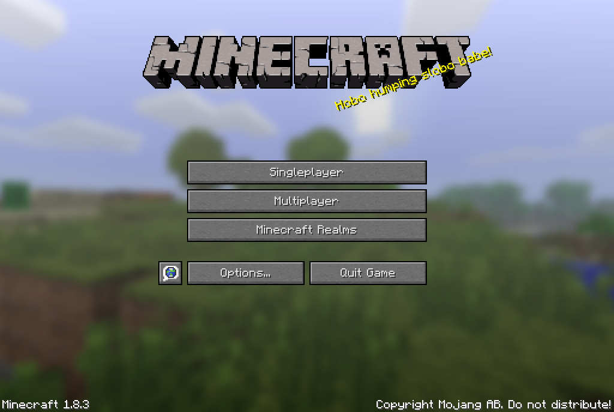

MineWiki
"Creeper?! Aww man..""
-Captain Sparkles, 'Minecraft'.
Minecraft
------------------------------------------------------------------------

Minecraft is described to be a 3D sandblock video game where players take free range of their creativity
and play on several gameplay modes of the game either solo or online. Minecraft was created under Mojang
Studios that was founded by the Swedish creator Markus Persson, otherwise known as ‘Notch’ back in 2009.
Minecraft only shared snapshots of the game until it was released in November of 2011 where it was only
released as a game for PC players. After several testing versions, Minecraft was able to release the game
on multiple platforms, after Persson offered to sell his share in Mojang with Xbox Game Studios through
Microsoft. With selling over 200 million copies, Minecraft is considered to be one of the best selling games
of all time as of 2021.
Gameplay
-----------------------------------------------------------------------
Minecraft has three modes of gameplay in which player can play:
Single Player
Players are able to play on their own survival world, where they can mine and survive the night as they come
across friendly or hostile mobs. Some of the common hostile mobs that a player can come across are:
- Creepers-Creepers follow and explode when they are close enough to the player.
- Zombies-Attack player when in sight and only appear at night time and burn during the daylight.
- Skeletons- Shoot arrows at player at sight and similar to Zombies they appear at night and burn during the daylight.
- Spiders- Only actively attacks players when spotted at night time but are friendly during the day unless attacked.
- Endermen- Endermen usually spawns during the night time and if a player makes eye contact or attacks,
the Endermen will attack the player.
There are several other mobs that a player will encounter but they are spawned in different dimensions. As
the player continues to play they will encounter/unclock dimensions such as:
- The Nether: The Nether is considered to be the underworld of minecraft as it is covered in nether blocks
and lava. The dimension is inhibited by several hostile mobs like. Players can visit The Nether
by building a 4x5 portal with obsidian and then ligh the portal with a flint and steel to activate it. - The End: The End is considered to be the last destination for a player when they come across the powerful
mob, The Ender Dragon. This space like dimension is a floating island made out of end stone and it is in
inhabited by several Endermen along side the Ender Dragon. Once the player defeats the Ender Dragon, a
Dragon Egg will spawn above the center structure and an exit portal will appear. Once a player jumps into
the portal, an end credit scene will display to the player and congradulating them for finishing the game.
The player will then be teleported back to their back to their last spawn point.


Multiplayer
Multiplayer allows players to join remote or public servers and play with others. Either players can create their own private servers and play with friends by sharing their LAN ip address, or they can find public servers online.
Personal Recommendations IP:
- Hypixel: mc.hypixel.net
- Purple Prison: purpleprison.org
- Minehunt: minehut.com
Minecraft Realms
Last but not least, Minecraft Realms! Minecraft Realms allows player to pay a subscription to own their personal
Minecraft server. It Allows players to play and invited their friends on their own personal shared world across
multiple devices.
Sites Cited
------------------------------------------------------------------------
“Minecraft Official Site.” Minecraft.net, 22 July 2021, www.minecraft.net/en-us.
“Minecraft Servers.” Minecraft Server List, best-minecraft-servers.co/.
“Minecraft Servers.” Minecraft.net, 18 Nov. 2020, www.minecraft.net/en-us/servers.